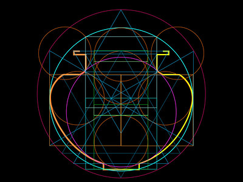
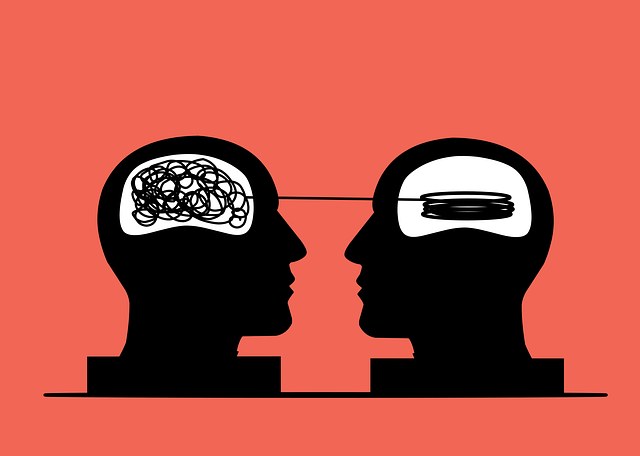

Lógico-matemática: habilidad para resolver problemas. Es la base de los test de cociente de inteligencia (CI).
Es de naturaleza no verbal.
Lingüística: sensibilidad hacia los rasgos fonológicos. Capacidad de adquirir la lectura y escritura y de aprender
lenguas de oído.
Visoespacial: resolución de problemas espaciales, visualización de objetos desde diferentes puntos de vista y capacidad
de orientarse.

Cinestésica–corporal: habilidad para usar el propio cuerpo para expresar una emoción (danza), competir en un juego
(deporte), o crear un nuevo producto (diseño, invención).
Musical: sensibilidad para entonar bien, reconocer canciones, percepción y producción musical.
Interpersonal: capacidad de comprender a los demás; cuáles son sus motivaciones, deseos, estados de ánimo y temperamentos
de las otras personas.

Otros autores distinguen diferentes tipos de inteligencia, aquí te dejo algunas webs para que los descubras y un test para
averiguar cuál es la tuya: